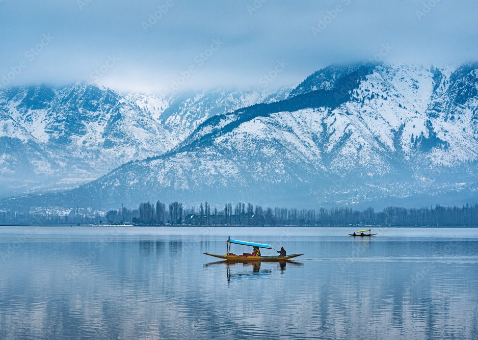

Srinagar-Travel Guide: Best Places to Visit
Welcome To The Venice of the East ! | June 24,2024

Wanderlust Journeys
Welcome To The Venice of the East ! | June 24,2024
Srinagar is a city in Indian-administered Jammu and Kashmir in the disputed Kashmir region. It is the largest city and summer capital of Jammu and Kashmir, which is an Indian-administered union territory. It lies in the Kashmir Valley along the banks of the Jhelum River, and the shores of Dal Lake and Anchar Lakes, between the Hari Parbat and Shankaracharya hills. The city is known for its natural environment, various gardens, waterfronts and houseboats. It is also known for traditional Kashmiri handicrafts like the Kashmir shawl (made of pashmina and cashmere wool), papier-mâché, wood carving, carpet weaving, and jewel making, as well as for dried fruits. It is the second-largest metropolitan area in the Himalayas (after Kathmandu, the capital of Nepal). Founded in the 6th century during the rule of the Gonanda dynasty according to the Rajatarangini, the city took on the name of an earlier capital thought to have been founded by the Mauryas in its vicinity. The city remained the most important capital of the Kashmir Valley under the Hindu dynasties, and was a major centre of learning. During the 14th–16th centuries the city's old town saw major expansions, particularly under the Shah Mir dynasty, whose kings used various parts of it as their capitals. It became the spiritual centre of Kashmir, and attracted several Sufi preachers. It also started to emerge as a hub of shawl weaving and other Kashmiri handicrafts. In the late 16th century, the city became part of the Mughal Empire, many of whose emperors used it as their summer resort. Many Mughal gardens were built in the city and around Dal lake during this time, of which Shalimar and Nishat are the most well-known.After passing through the hands of the Afghan Durranis and the Sikhs in the late 18th and early 19th century, it eventually became the summer capital of the Dogra kingdom of Jammu and Kashmir in 1846. The city became a popular tourist destination among Europeans and Indian elites during this time, with several hotels and its iconic houseboats being built. In 1952, the city became the summer capital of Jammu and Kashmir, a region administered by India as a state, with Jammu being its winter capital. It was the flashpoint of violence during the 1990s and early 2000s insurgency in the region. In 2019, it became the summer capital of a smaller region which is administered by India as a union territory, after the former state's reorganisation.


Dal is a lake in Srinagar (Dal Lake is a misnomer as Dal in Kashmiri means lake), the summer capital of Jammu and Kashmir. The urban lake, is integral to tourism and recreation in Kashmir and is named the “Jewel in the crown of Kashmir” or “Srinagar's Jewel”.The lake is also an important source for commercial operations in fishing and water plant harvesting.The shore line of the lake, is about 15.5 kilometres (9.6 mi), is encompassed by a boulevard lined with Mughal era gardens, parks, houseboats and hotels. Scenic views of the lake can be witnessed from the shore line Mughal gardens, such as Shalimar Bagh and Nishat Bagh built during the reign of Mughal Emperor Jahangir and from houseboats cruising along the lake in the colourful shikaras. During the winter season, the temperature sometimes reaches -11 °C (12 °F), freezing the lake.The lake covers an area of 18 square kilometres (6.9 sq mi) and is part of a natural wetland which covers 21.1 square kilometres (8.1 sq mi), including its floating gardens. The floating gardens, known as “Raad” in Kashmiri, blossom with lotus flowers during July and August. The wetland is divided by causeways into four basins; Gagribal, Lokut Dal, Bod Dal and Nagin (although Nagin is also considered as an independent lake). Lokut-dal and Bod-dal each have an island in the centre, known as Rup Lank (or Char Chinari) and Sona Lank respectively.The houseboats are closely associated with Dal Lake which provide accommodation to tourists in Srinagar.


Nigeen Lake (alteratively spelled as Nageen Lake) is a mildly eutrophic. lake located in Srinagar, Jammu and Kashmir, India. It is sometimes considered a part of the Dal lake and is connected to it via a narrow strait. It is also connected to the Khushal Sar and Gil Sar lakes via a channel known as Nallah Amir Khan.The Nigeen lake is surrounded by a large number of willow and poplar trees. Hence, it has come to be referred as a “nageena”, which means “the jewel in the ring”. The word “nigeen” is a local variant of the same word. The lake is located adjacent to the Hari Parbat hillock, to the west of the Dal lake. To its north east lies the locality of Hazratbal, which is known for the famous shrine. The lake is a major tourist attraction in Srinagar, known for its relatively pristine waters as compared to the Dal lake. Houseboats and Shikaras are a usual sight. Its also ideal for swimming, being deeper and less crowded than the Dal lake.The lake is a major tourist attraction in Srinagar, known for its relatively pristine waters as compared to the Dal lake. Houseboats and shikaras are a usual sight. Its also ideal for swimming, being deeper and less crowded than the Dal lake. The colonial era Nigeen Club is situated on the eastern shore of the lake. However, as is the problem with other water bodies in the Kashmir Valley, the lake also suffers from encroachments which are deteriorating its water quality and also increasing the risk of floods. As such, the government of Jammu and Kashmir is engaged in taking steps to help improve the condition of the lake and restore it to its original glory.


Chashma Shahi or Chashma i Shahi (translation: the royal spring), also called Chashma Shahi, is one of the Mughal gardens built in 1632 AD around a spring by Ali Mardan Khan, a governor of Mughal emperor Shah Jahan as per the orders of the Emperor, as a gift for his elder son Prince Dara Shikoh. The garden is located in the Zabarwan Range, near Raj Bhawan (Governor's house) overlooking Dal Lake in Srinagar, Kashmir.The Chashme Shahi is located within the jurisdiction of Srinagar city, 14 kilometres (9 mi) in the northeast from the Srinagar Airport. It is adjacent to Rajbhawan (Governor's house). The garden is connected by the Boulevard Road which passes along the banks of the Dal lake. The main focus of the garden is the spring which flows down in terraces and is divided into three sections: an aqueduct, waterfall, and fountains. A two-storey Kashmiri hut stands at the first terrace which is the origin of the spring. The water then flows down through a water ramp (chadar) into the second terrace. The second terrace serves as a water pool and a large fountain stands at its centre. The water again flows down through a water ramp into the third terrace, which is a square five-fountain pool. It is the lowest pool at the entrance of the garden.There are many hotels and restaurants available for boarding and lodging near the garden. The garden remains open for tourists from March to November. The best time to visit the garden is from April to October. The garden is at full bloom during May and June.
Wular Lake (Urdu pronunciation: [ʋʊləɾ]), also known as Wolar (Kashmiri pronunciation: [wɔlar]) in Kashmiri, is one of the largest fresh water lakes in South Asia. It is located near Bandipora town in the Bandipora district of Jammu and Kashmir, India.The lake basin was formed as a result of tectonic activity and is fed by the Jhelum River and stream Madhumati and Arin.The lake's size varies seasonally from 30 to 189 square kilometres. In addition, much of the lake has been drained as a result of willow plantations being built on the shore in the 1950s.Wular Lake is the 2nd largest fresh-water lake of Asia, situated on the foothills of Haramuk Mountain. It is spread in a total area of 200 square km covering almost 24 km in length while its breadth is 10 km. The lake lies between the towns of Sopur and Bandippore, in Sangrama, near Baramula Road. Main source of water for Wular Lake is River Jhelum. This lake also has a small island in its centre called the 'Zaina Lank'. This island was constructed by King Zainul-Abi-Din. Wular Lake is also said to be a remnant of Satisar Lake that existed in ancient times. The premises of this lake also form a popular sunset point.The lake sustains a rich population of birds. Terrestrial birds observed around the lake include the black-eared kite, Eurasian sparrowhawk, short-toed eagle, Himalayan golden eagle, Himalayan monal, chukar partridge, koklass pheasant, rock dove, common cuckoo, alpine swift, Indian roller, Himalayan woodpecker, hoopoe, barn swallow, golden oriole and others.